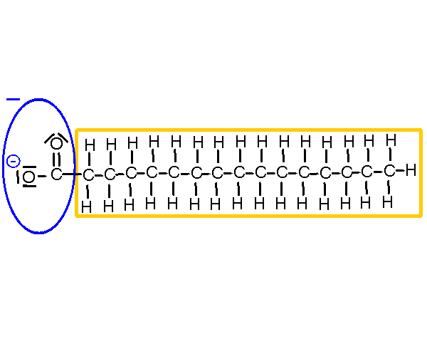
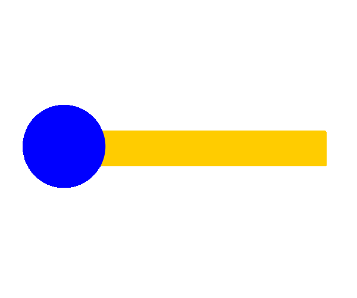
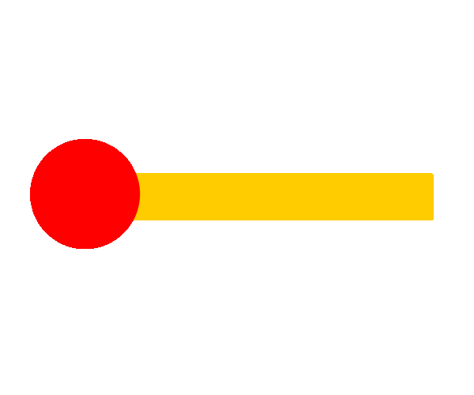
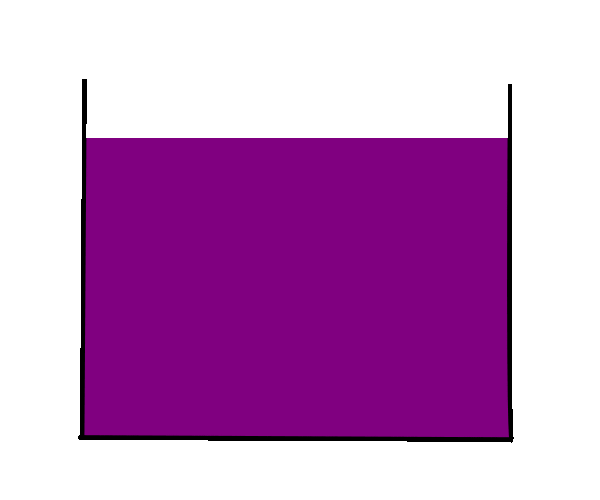
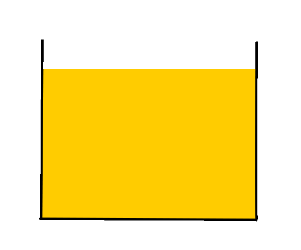

Als Beispiel für ein anionisches Tensid wird hier das
Anion der gesättigten Fettsäure
Palmitinsäure (= Hexadecansäure, Summenformel: C₁₅H₃₁COOH), also das
Palmitation (= Hexadecanation, Summenformel: C₁₅H₃₁COO⁻) betrachtet.

Die negativ geladene hydrophile Kopfgruppe wird
vereinfacht als blaue Kugel dargestellt.
Die unpolare lipophile Schwanzgruppe wird als gelber Stab dargestellt.

Die positiv geladene hydrophile Kopfgruppe wird vereinfacht
als rote Kugel dargestellt.
Die unpolare lipophile Schwanzgruppe wird als gelber Stab dargestellt.

Die hydrophile (wässrige) Phase wird als violette Fläche dargestellt,
da jedes Wassermolekül sowohl zwei positiv polarisierte H-Atome
als auch ein negativ polarisiertes O-Atom besitzt.

Die lipophile (ölige oder gasförmige) Phase wird als
gelbe bzw. weiße Fläche dargestellt, da die Öl- bzw. Luftmoleküle
eine eher unpolare Moleküloberfläche besitzen.